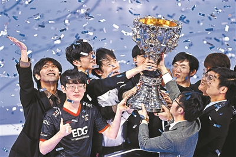

北京时间11月7日凌晨，于冰岛雷克雅未克举行的2021英雄联盟全球总决赛（以下简称S11）正式落下帷幕，来自LPL赛区的EDG战队最终不负期待，以3比2的成绩击败来自LCK赛区的劲敌DK，成功夺得S11的冠军宝座，帮助LPL赛区拿下第三个召唤师奖杯。
赛后，北京青年报记者通过网络视频采访了夺冠后的EDG战队，对于今年S11比赛， EDG打野选手JieJie直言：“LPL赛区实力毋庸置疑，这个赛区永远不缺具有实力的队伍和选手，只是我们此前的成绩没有被大家看好，没关系，我们用冠军证明自己！”
首局中，EDG全员延续此前火热状态，在多次团战中打出优势，更在30分钟的大龙处时，完成了对DK的团灭并拿下大龙，也由此奠定了EDG此局的胜利。其中，打野选手JieJie发挥尤为出色，此前大放异彩的皇子在这局对决中更为出彩，多次果断进场开团，也毫无疑问地拿下此局MVP。
第二局比赛中，DK更换了BP思路，以中路玛尔扎哈搭配打野奇亚娜打出节奏。尽管EDG打野选手JieJie奇迹般抢下大龙，扳回一定劣势，但一直保持领先的DK仍旧将优势延续到最后，成功扳平大比分。
到了关键的第三局，随着DK拿下第三条小龙，且在小龙坑打出1换4，胜利的天平已逐渐向DK倾斜。随后，在紧张的大龙团战中，DK打野选手Canyon的盲僧果断进场踢回EDG上单杰斯并完成秒杀，也帮助队伍击杀4人并拿下大龙，更帮助DK拿下第三局的胜利，拿下赛点。
第四局对于EDG而言至关重要，而EDG也不负众望地抓住了机会，快速调整BP策略，不仅以打野佛耶戈及中路佐伊的“中野”组合在前期打出优势，上单Flandre的男枪也打出爆炸输出。随着比赛32分钟时EDG的主动开团，将DK的下路组合率先击杀，最终EDG以摧枯拉朽之势推倒DK基地，将比赛带入最后的第五局。
作为最后一局的决胜局，双方都相当谨慎。拿到凯南的EDG上单选手Flandre频频用大招完成埋伏击杀，而中路选手Scout也延续了上一把佐伊的火热状态。尽管DK一直表现出顽强的意志，但面对DK发起的挑战，棋高一着的EDG并没有给对手机会，最终在总计5局的较量当中3次取胜，一举夺冠。
对于这次绝对强者的对决，输掉比赛的DK战队的选手接受采访时比较轻松，直言：“我们需要以轻松的态度面对这次失败。”对于为何会失掉最终的比赛，他们直言：“EDG的准备工作会比我们更加充分。”对于EDG能够取得胜利的核心要点，教练茂凯坦言：“我们对于第一局的比赛非常充分，第一局的胜利给了我们很多信心，随后的比赛中我们对于自己和对手的英雄选择做了很多调整，最终有了一个不错的结果。”
作为LPL的老牌劲旅，夺得S11总冠军的EDG，似是众望所归，但LPL赛区资深观众却应该知道，EDG此次夺冠之路的坎坷波折。
此前曾连续三年无缘全球总决赛的EDG，迎来Viper和Flandre等选手的加盟后，几乎是在质疑声中开启自己的2021赛年。然而，迎来全新阵容的EDG却也出人意料地一改此前颓势，在春季赛以常规赛第二名的身份入围季后赛并斩获季军，又在夏季赛拿下最终冠军。
以LPL赛区一号种子出征的EDG，此次的S11征战之旅却并不顺畅。开赛初期，背负着外界，尤其是LPL赛区观众的期待的EDG，却在小组赛第二轮因先后败于T1与100T之手屈居小组第二。随后的八强战中，尽管EDG以3比2淘汰RNG涉险过关，但比赛过程中暴露出的诸多瑕疵也令外界开始担忧EDG能否更进一步。
决赛中，面对赛前普遍更被看好的卫冕冠军DK，EDG再次爆发出惊人能量。以挑战者姿态登场的他们没有因所谓纸面实力的差距而在BP对战中畏首畏尾，反而较之此前两轮淘汰赛的表现更加敢打敢拼，也正是这种“稳中带莽”的打法，让他们笑到了最后。
昨晚的比赛也受到大众的关注，11月6日晚的微博热搜，被S11“承包”，朋友圈里也都是对EDG战队夺冠的期冀，截至北京时间11月7日早7点，“EDG夺冠”这一微博热搜阅读量已达到13.7亿，话题讨论数已达到121.8万次。截至北京时间11月7日早7点，“EDG夺冠”这一微博热搜阅读量已达到13.7亿，话题讨论数已达到121.8万次。B站更是5亿网友关注，更有很多大学校园和商超组织年轻人线下观赛。其中网友关于“EDG夺冠目标”最为热衷，对此EDG队员表示：“我们在冰岛也关注到网友们立下目标，这对我们来说是动力也是压力，其实我自己也有立下目标，如果夺冠就想买啥买啥，如今愿望成真。”
随着EDG捧得队伍历史上第一座、LPL历史上第三座全球总决赛冠军奖杯，2021英雄联盟全球总决赛也正式落下帷幕。此次EDG的夺冠，也用成绩宣告了LPL赛区依旧在全球总决赛的舞台上具备极强的竞争力。近几年来，随着国家政策及地方政府支持等利好因素，中国电竞产业获得持续性、爆发性增长。这次LPL赛区战队的登顶，无疑也是中国电竞高速发展的印证。
当中国电竞战队EDG取得S11世界冠军后，年轻人都在庆祝属于他们的喜悦，可能庆祝的方式有些幼稚，但属于他们这个年龄。如果你是中年人，可能不知道谁是EDG、何为S11，但你绝不能错过这份该属于全体中国人的荣耀，这是一群少年拼了命拿到的又一个世界冠军，让全世界年轻人的目光再度锁定中国。
EDG的夺冠并不是中国电竞第一个世界冠军，更不是最后一个，为何年轻人会如此疯狂地庆祝这个世界冠军的诞生？可能是中国电竞长时间在被戴着有色眼镜审视中成长着，这份成长的背后有着“Z世代”年轻人的骨子里的那份骄傲。年轻人想用一个又一个世界冠军告诉大家：电竞将是下个时代的体育项目之一。
前段时间有媒体报道大学电竞社被“边缘化”，几个电竞社的社员只能在操场角落、食堂开展活动，他们做的是见不得光的事吗？显然不是，这里面掺杂大众对电竞的误解。你可以不认识EDG，也可以不了解电竞，但你一定要知道年轻人在想什么，做什么，因为年轻人正在用他们的方式书写着我们的现在。在笔者看来，这份冠军与当年女排的奥运冠军、中国乒乓军团的冠军一样，都是在提振中国人的士气，为中国增光添彩。
明年，在杭州举办的亚运会电竞将首次作为正式益智类比赛项目进行竞技，这将是电竞“登堂入室”的一小步，但对于少年们而言，是向全亚洲、全世界展示自己青春风采的大舞台。“电竞”将是全球新时代年轻人认识中国的新名片，也请你一起来加入青年人的“二次元”世界，我相信一场线下电竞比赛的呼喊声，绝对能让你热泪盈眶，我们在杭州等你！一起见证下一个属于中国的冠军！
本组文/本报记者 王磊 统筹/满羿
供图/视觉中国